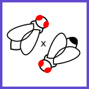

flyUtils
.konstrui.com

singleCross
A tool designed to analyze single step crosses. Draws a Punnett square for the cross and highlights clashing genotypes (i.e. multiple genotypes with the same phenotype) and other undesirable conditions like recombimnation and lethality